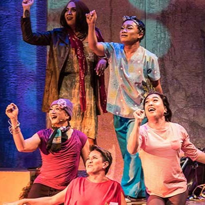
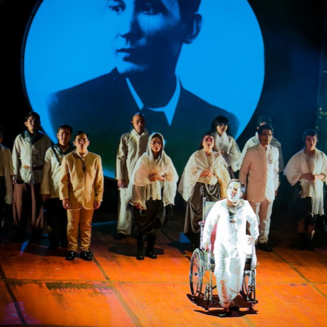
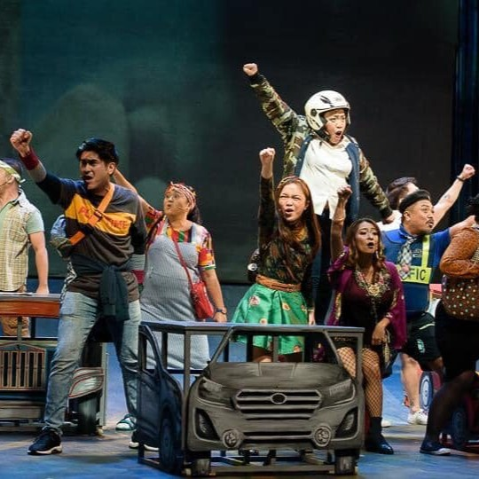
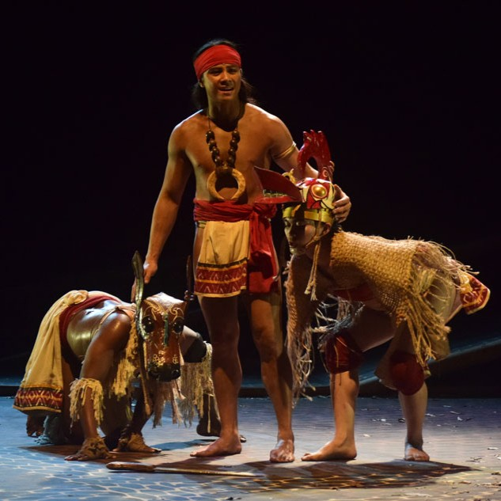

Theater performance combines movement, music, costumes, props, and teamwork to express stories, emotions, and ideas through art. Its success is measured by creativity, coordination, and the effective use of art principles such as balance, rhythm, and emphasis.
This sub-topic focuses on the "doing"—turning visual art into a living performance.

In Theater involve using body movements and facial expressions to convey a character’s emotions, intentions, and actions on stage. In theater, gestures are intentional and symbolic, helping tell the story without relying only on dialogue. For example, slow, controlled hand movements can show a character aging or growing in hope, while sharp, forceful movements can express conflict or tension.

Used to enhance mood, atmosphere, and dramatic impact. This includes background music, sound effects, and live or recorded percussion that support the scene. Fast, intense sounds can heighten suspense or action, while soft or slow sounds can create sadness, calm, or reflection. Traditional and modern theater may both use instruments or digital sound to strengthen storytelling.

Refers to how actors, directors, stage designers, and technical crews work together to create a unified performance. Each role contributes—such as costume design, lighting, acting, and set design—to bring the story to life. Successful theater relies on teamwork so that all elements support the same artistic vision on stage.

The process of assessing how effectively a production communicates its story and emotions to the audience. It considers acting quality, stage presence, timing, technical design, and overall coherence of the performance. Evaluation helps performers and production teams improve future shows and refine their theatrical skills.
| Phase | Key Activity | Visual/Artistic Focus |
|---|---|---|
| Pre-Production | Concept and Sketching | Researching historical textiles and silhouettes. |
| Technical Rehearsal | Light/Sound Integration | Checking how costume colors react to stage lights. |
| Performance | Execution and Gestures | Ensuring props and choreographed movements are synchronized. |
| Post-Performance | Evaluation | Assessing how effectively the story reached the audience. |